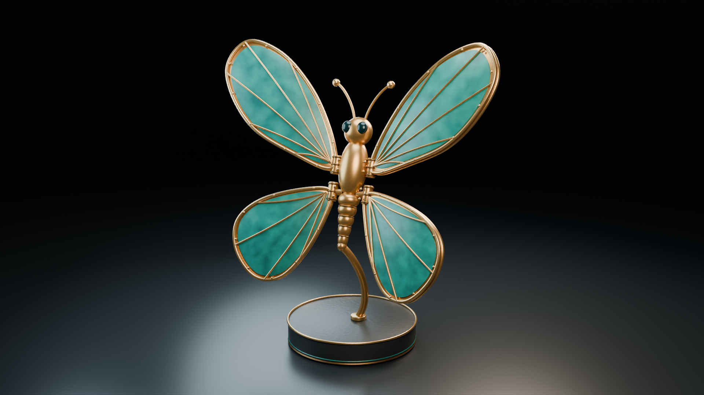
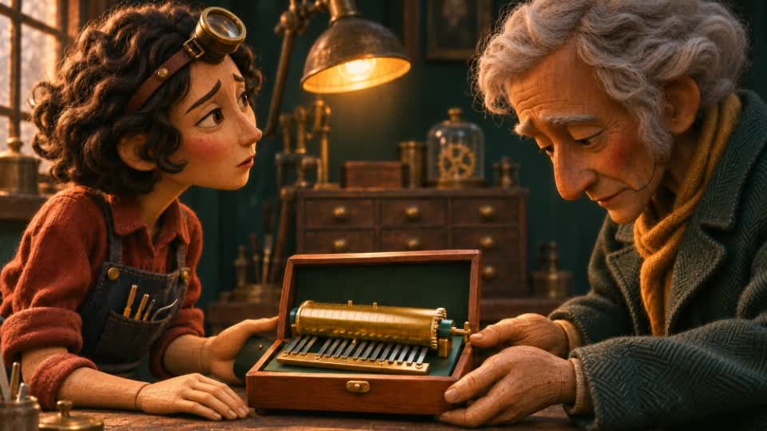

Animation Studio
Twelve peer projects with editable SVG and 3D sources, Blender animation, original sound and retained development records.

Papilio
A quiet museum sculpture. Four articulated wings, six wing cycles and one complete camera orbit in a twelve-second loop.

The Tooth That Didn’t Sing
A repair takes away an old man’s part in a tune. A sixteen-second film about the difference between a working mechanism and a shared song.
The shared creative method
The vocabulary broadens what we imagine. The rubric helps decide what to test. Production and audience feedback determine whether an artifact meets its purpose.